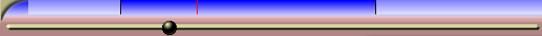

| [ << ] | [ >> ] | [Top] | [Contents] | [Index] | [ ? ] |
Ikustailearen eta Konsposaketako nabigazioaren funtzionalitateak antzeko portaera dute. Bakoitzak denbora-barra eta graduatzailea du bideoaren irteeraren azpian. Denbora-barra eta graduatzailea oso kritikoak dira nabigazioan.
Programak estaltzen duen denbora osoa adierazten du denbora-barrak. Etiketak eta sarrerako/irteerako puntuak definitzen dituzunean, denbora-barrak ere definitu egiten ditu. Azkenik, denbora-barrak Aurrebistaren eskualdea izenarekin ezagutzen den eskualdea definiten du.
Graduatzaileak eragiten dioten denbora-lerroko eskualdea da Aurrebistaren eskualdea. Aurrebistaren eskualdeak estaltzen duen denbora da graduatzaileak ere estaltzen duena. Programa osoaren barruan aurrebistaren eskualdea erabiliz, eta graduatzailea aurrebistaren eskualdean erabiliz, azkar eta doitasunez koka zaitezke Ikustailean eta Konposaketan.
Uneko proiektua fitxategi batekin ordezten baduzu, aurrebistaren euskaldea tamainaz automatikoki aldatuko da fitxategi osoa estaltzeko. Uneko proiektuaren tamaina aldatu edo datuak eransten badizkiozu, aurrebistaren eskualdeak tamaina berdinarekin jarraituko du eta txikiagotu egiten da. Beraz, aurrebistaren eskualdea tamainaz aldatu beharko duzu.
Kargatu fitxategi bat, eta gero, korritu inguruan konposaketako graduatzailea erabiliz. Leiho nagusiko txertatzeko puntuak konposaketari jarraitzen dio. Mugitu saguaren erakuslea konposaketako denbora-barraren ezkerretara erakuslea formaz aldatu arte (ezkerrera zuzentzen duen gezia <=). Egin klik eta arrastatu eskuinera. Aurrebistaren eskualdea aldatu egin beharko litzakete, eta graduatzailea proportzionalki tamainaz aldatu.
Joan denbora-barraren eskuinera erakuslea formaz aldatu arte (eskuinera zuzentzen duen gezia =>). Arrastatu ezkerrera aurrebistaren eskualdea txikiagotzeko.
Denbora-barran, joan aurrebistaren eskualdearen zentrura eta arrastatu mugi daitekeela konturatu arte. Erakuslea <=> formakoa izango da.
Oharra: uneko proiektuaren tamaina aldatu edo datuak eransten badizkiozu, aurrebistaren eskualdeak tamaina berdinarekin jarraituko du eta txikiagotu egiten da. Beraz, aurrebistaren eskualdea tamainaz aldatu beharko duzu.

Aurrebistaren eskualdea konposaketa-leihoan
Graduatzailera joan eta albo batera edo bestera mugitzean, aurrebistaren eskualde txikiagoarekin, graduatzaileak aurrebistaren eskualdeari eragiten diola soilik ikusiko duzu. Ikustailearen leihoko denbora-barra eta graduatzaileek gauza berdina egiten dute.
Etiketak eta sarrerako/irteerako puntuak erabat onartuta dauden ikustailean eta konposaketan. Ikustailearen eta konposaketaren arteko desberdintasuna honakoa da: konposaketak programaren egoera adierazten du; ikustaileak berriz klip baten egoera adierazten du, baina ez programarena.
Konposaketa-leihoan etiketa botoia sakatzean, etiketa bai konposaletako denbora-barran bai programaren denbora-barran agertuko da.
Konposaketa-leihoan etiketa edo sarrerako/irteerako puntu bat hautatzean, programaren leihoak posizio horretara egiten du jauzi.

Etiketak eta sarrerako/irteerako puntuak Ikustailean.
Ikustailean eta konposaketa-leihoan, etiketak eta sarrerako/irteerako puntuak denbora-barran bistaratzen dira. Programaren eskualde batean bistaratu ordez, denbora-barrak programa osoa bistaratzen du.
Programaren leihoak bezala, konposaketa-leihoak zoomaren gaitasuna du. Aurrenik, Konposaketa-leihoaren behean dagoen menuen zerrendak zoomaren hainbat aukera ditu. Menu horretan Automatikoa elementua hautatzean, konposaketa-leihoaren tamainara doituko da bideoaren zooma. Ehuneko beste edozeinekin ezartzean, bideoa bider bi handiagotzen/txikiagotzen da zooma eta korritze-barra erabil daiteke irteeraren inguruan korritzeko. Leihoaren tamaina baino gehiago handitzen bada bideoaren zooma, korritze-barra erabiltzeaz gain, saguaren erdiko botoiarekin bideoan arrastatu irteera arakatzeko. Gimp-ek ere antzeko funtzionalitatea du.
Gainera,  zooma txandakaria hautatzean
Konposaketa-leihoa zooma moduan sartzen da. Zooma moduan, bideoaren irteeran
klik eginez zooma handiagotzen du, Ktrl+klik egitean ordea zooma txikiagotzen da.
Saguak gurpila badu, gurpila biratzean zooma handiagotzen edo txikiagotzen da.
Jakin ezazu zooma tresnarekin handiagotzean edo txikiagotzean ez dela errendatutako
irteera aldatzen. Bideoa aztertzeko edo mahaigainari doitzeko erabiltzen da zooma.
zooma txandakaria hautatzean
Konposaketa-leihoa zooma moduan sartzen da. Zooma moduan, bideoaren irteeran
klik eginez zooma handiagotzen du, Ktrl+klik egitean ordea zooma txikiagotzen da.
Saguak gurpila badu, gurpila biratzean zooma handiagotzen edo txikiagotzen da.
Jakin ezazu zooma tresnarekin handiagotzean edo txikiagotzean ez dela errendatutako
irteera aldatzen. Bideoa aztertzeko edo mahaigainari doitzeko erabiltzen da zooma.
Oharra: Konposaketa-leihoan, %100 ez den balio batekin bideoa erreproduzitzen bada, Cinelerra-k prozesamendu gehiago landu beharko du. Sistema moteletan errendimenduari eragin dezaioke.
| [ << ] | [ >> ] | [Top] | [Contents] | [Index] | [ ? ] |
This document was generated by Raffaella Traniello on December, 31 2007 using texi2html 1.76.